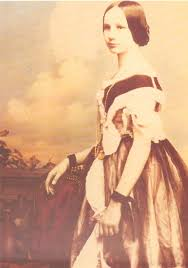

ADA LOVELACE
The first computer programmer

Auguta Ada King. Countess of Lovelace was an Enlish mathematicians and writer, known for her work on charles Babbage's proposed machanical general-purposed computer, the Analytical Engine. She has been called as the world's first computer programmer. What she did was write the world's first machine algorithm for an early computing machine that existed only on paper.
Here's a timeline of Ada Lovelace's life;
- 1815 -Born as Augusta Ada Byron in London, England.
- 1828 - At the age of 12 she was passionate to fly. This made her to construct wings and wrote a book "flyology" after examining the anatomy of the birds.
- 1829 -She was paralyzed after bout of mealses.
- 1831 - she was able to walk with crutches on her recovery from the illness.
- 1832 -Her mathematical abilities began to emerge at the age of 17.
- 1833 -She met Charlse Babbage, through a mutual friend her private tutor.
- 1835 -She married Williams King.
- 1838 -Her husband was made Earl of Lovelace thereby becoming Countess of Lovelace.
- Betweeen 1842 and 1843 - Ada transalated an article by Italian military engineer Menabrea on babbage's proposed Anaytical engine, supplementing it with an elaborated set of notes.
- 1844 - She commented to a friend about her desire to create a mathematical model of how the brain give rise to thoughts and nerves to feelings.
- 1851 - She made an ambitious attempt to create mathematical model for successful large bets.
- 1852 -She died of uterine cancer at the age of 36.
"The science of operations, as derived from mathematics more especially is a science itself, and has its own abstract truth and value". - Ada LovelaceThe second Tuesday of every October marks Ada Lovelace Day.
Read more about Ada Lovelace at Wikipedia.
Project by FreeCodeCamp Coded by Emejulu Nneamaka Blessing